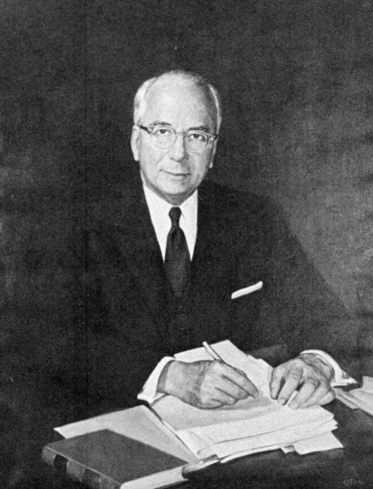
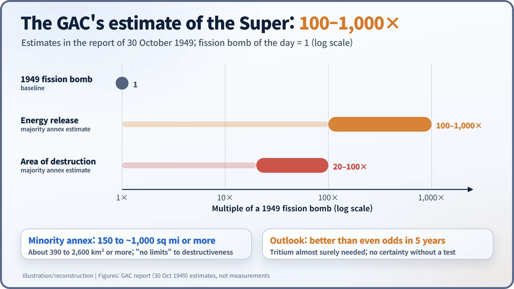
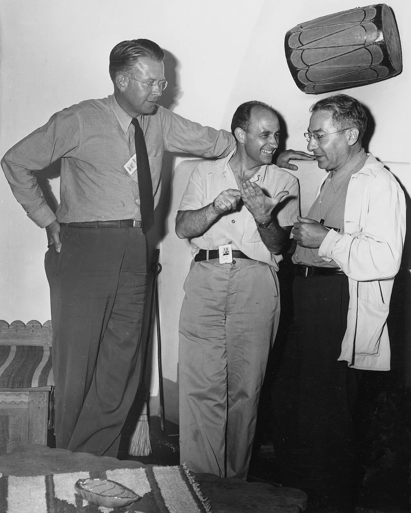
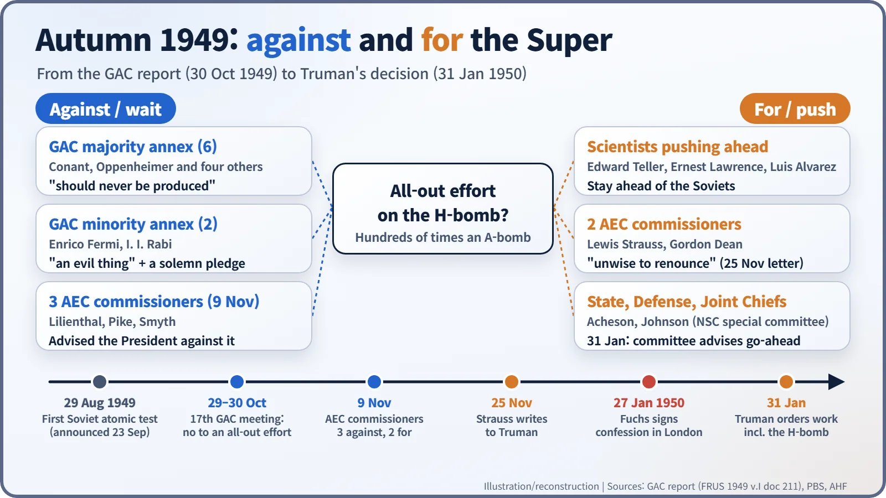

Nuclear History · 135
"An Evil Thing Considered in Any Light" — The H-Bomb Debate and the GAC Report (1949)
After the first Soviet bomb, America's top atomic advisers asked not whether the Super could be built but whether it should be, and lost the argument by 31 January 1950.
Weeks after the first Soviet atomic test, the Atomic Energy Commission's General Advisory Committee, chaired by J. Robert Oppenheimer, met on 29–30 October 1949 and unanimously advised against an all-out effort to build the hydrogen bomb. Its majority called the weapon a possible "weapon of genocide"; Enrico Fermi and I. I. Rabi called it "an evil thing considered in any light". Three months later, on 31 January 1950, President Truman ordered the work to go ahead.
A sentence nobody expects in a government file
"It is necessarily an evil thing considered in any light."
It reads like a line from a protest pamphlet or a philosophy seminar. In fact it was typed into a top-secret advisory report to the US government on 30 October 1949, and two signatures stood beneath it. One belonged to Enrico Fermi (1901–1954), the other to I. I. Rabi (1898–1988), both Nobel laureates in physics. The "thing" they were describing did not yet exist. It was the hydrogen bomb. [1]
The autumn the monopoly ended
On 29 August 1949 the Soviet Union exploded its first atomic bomb, and on 23 September President Harry S. Truman told the world. Almost at once a group in Washington argued that the United States had to leap a step ahead. Its best-known voices were the physicists Edward Teller (1908–2003), Ernest O. Lawrence (1901–1958) and Luis Alvarez, joined by Lewis L. Strauss (1896–1974), a member of the Atomic Energy Commission (AEC). [3] [4]
The weapon they wanted was nicknamed the "Super". An atomic bomb releases energy by splitting heavy nuclei; the Super aimed instead at fusion, joining light nuclei together, the process that powers the Sun. Lighting that fire takes tens of millions of degrees, so the idea was to use an atomic bomb as the match.

One weekend, eight verdicts
The AEC turned to its scientific advisers, the General Advisory Committee (GAC), chaired by J. Robert Oppenheimer (1904–1967). Eight of its nine members (Glenn Seaborg was in Europe) met in Washington on Saturday and Sunday, 29–30 October 1949. Some accounts give the dates as 28–30 October. [1] [2]
Their answer was blunt. "No member of the Committee was willing to endorse this proposal," the report said. The proposal was what the text calls an "all-out effort"; the popular phrase "crash program" does not actually appear in it.
What is striking is the reasoning. The scientists did not say the bomb was impossible. They judged that "an imaginative and concerted attack on the problem has a better than even chance of producing the weapon within five years", while adding that tritium would almost certainly be needed and that nobody could be sure without building and testing one. Their objection was to the nature of the weapon. There was, they warned, "no limit to the explosive power of the bomb itself except that imposed by requirements of delivery." [1]

Two annexes, two kinds of "no"
Two annexes were attached, and they did not say quite the same thing. The majority annex, signed by six members including James B. Conant (1893–1978) and Oppenheimer, estimated that a Super would release 100 to 1,000 times the energy of an atomic bomb and destroy an area 20 to 100 times larger. "A super bomb might become a weapon of genocide," it said, and it "represents a threat to the future of the human race which is intolerable." Its conclusion: "We believe a super bomb should never be produced." Choosing not to build it, the authors added, could provide "by example some limitations on the totality of war." [1]
Fermi and Rabi's minority annex put the area of destruction at "from 150 to approximately 1000 square miles or more" (roughly 390 to 2,600 km²) and contained the sentence quoted at the top. Their remedy was different. They wrote that "we think it wrong on fundamental ethical principles to initiate a program of development of such a weapon", and proposed that the President invite other nations to join "a solemn pledge not to proceed in the development or construction of weapons of this category." Unconditional renunciation on one side; an attempt at an international pledge first on the other. [1] [2]
One common misunderstanding is worth clearing up. The GAC did not oppose every expansion of the arsenal. It actually recommended more effort on tactical atomic weapons and a prompt start on reactors to produce neutrons, which meant tritium and plutonium.

Overturned in three months
Advice was only advice. On 9 November the five AEC commissioners sent the President their views: Chairman David E. Lilienthal (1899–1981), Sumner Pike and Henry Smyth against; Strauss and Gordon Dean in favour. On 25 November Strauss wrote to Truman directly, arguing that it would be "unwise to renounce, unilaterally, any weapon" an enemy could be expected to possess. The decision passed to a special committee of the National Security Council: Secretary of State Dean Acheson, Defense Secretary Louis Johnson and Lilienthal. The two secretaries favoured going ahead. [3] [4]

Meanwhile, in London, Klaus Fuchs, a physicist who had worked at Los Alamos, signed a statement on 27 January 1950 admitting that he had spied for the Soviet Union. On 31 January the special committee met the President at the White House. According to a story often told, drawing on Lilienthal's account, the meeting lasted about seven minutes and Truman asked, "What the hell are we waiting for?" That day he announced that he had "directed the Atomic Energy Commission to continue its work on all forms of atomic weapons, including the so-called hydrogen or superbomb." Historians disagree about how much the Fuchs affair weighed on the decision; what is certain is that the two landed in the same week. [5] [6]
What the document left behind
There is an irony here. The 1949 design, later called the "classical Super", probably would not have worked. Calculations in 1950 came out discouraging, and the way forward opened only with a new idea in 1951. The first hydrogen-bomb test followed in November 1952.
Oppenheimer's opposition to the Super became an issue at his 1954 security hearing, and the GAC report itself was largely declassified only in 1974. Its advice was overturned within three months. Yet the record remains of the government's own top experts asking, in an official document, not "Can we build it?" but "Should we?" Whether something can be done and whether it should be done are different questions, and that is why these few pages are still read.